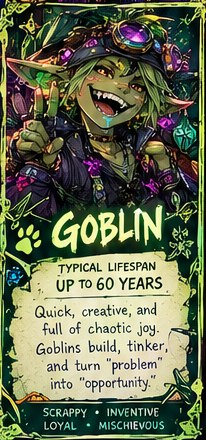
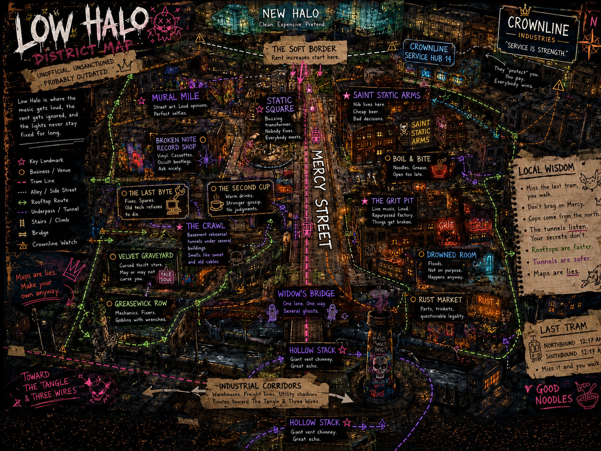

Art system v1 · Design preview only
Adyta PDA
People · Places · Rumors · Opportunities
A livin' city in your pocket
Welcome to Adyta
The city has a life before you arrive. Stories are already happening. Find your place—or make trouble.
Different people. Same wild city.
Species Guides

Sideways Says
Meet the neighbors, learn the rules, and remember: age isn't the same as wisdom.
Rules remain authoritative in data/rules.json. Commentary remains separate.
City Districts

Locations, routes, territories, and what they whisper about you.
Map art stays separate from map dataCurrent Opportunities
Contract bulletin
Future: dynamic mission cardsMission data belongs to the game. Art styles its presentation; it never invents authoritative rewards.
Sideways Shops
Curiosities & questionable advice
Mana Bracelet · HR Cube · Staffs & Focuses · Floorboard Oddlings
Digital drops and physical artifacts can share catalog IDs.
Static visual-only integration proof. No simulation, interactive map, or game-state authority in this preview. All existing gameplay pages remain unchanged.